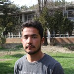
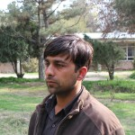

افغانستان، در آستانه انتخابات ریاستجمهوری و شوراهای ولایتی در افغانستان است. زمان ثبتنام برای رایدادن و مهلت تبلیغات و کمپینهای نامزدها شب گذشته به پایان رسیدهاست. خبرها و گزارشات همگی حاکی از این است که گروههای مختلف از هیاتهای برگزارکننده، ناظران گرفته تا روزنامهنگاران و شهروندان در انتظار روز راگیری هستند. مطلب زیر در وبسایت «روزنامه جامعه باز» منتشر شده است که به خوبی دغدغهها و چالشهای حول این انتخابات را از زبان روزنامهنگاران و دانشجویان جوان افغان، بیان میکند.
دو روز دیگر به روز برگزاری انتخابات ریاستجمهوری و شوراهای ولایتی زمان باقی است. نشانهها اما حکایت از آن دارد که مردم به شکل گسترده در انتخابات شرکت خواهند کرد.
دو ماه پیش زمانی که کارزار انتخابات رسماً شروع شد، گمان میرفت که شاید حضور مردم در این انتخابات، کمرنگ باشد. بسیاریها به ناکامبودن این پروسه از همان ابتدا تأکید داشتند و کم نبودند کسانی که با بیمیلی، رویدادهای مربوط به انتخابات را دنبال میکردند. با اینحال، هرچه از روزهای شروع رقابتهای رسمی نامزدهای انتخاباتی گذشت، فضای سیاسی و اجتماعی کشور نیز بدل شد. در حدی که اکنون، در تمامی اماکن عمومی و خصوصی، نشانههای این رقابتها یافت میشود.
کلانشهرها شاهد اوج رقابت نامزدهای ریاستجمهوری است و رانندگان تاکسیها نیز، عکس نامزد مورد علاقۀشان را به شیشههای موترشان میچسپانند. مردان، زنان و اهل بازار، همه در صف مخالفان و موافقان نامزدهای این دور ریاستجمهوری قرار گرفتهاند. صحبت از بودن یا نبودن با یک تیم، حتا محافل خصوصی را نیز درنوردیده است. اگر شدیدشدن رقابت نامزدهای دور سوم ریاستجمهوری و سفرهای فشردۀ ولایتی آنها را نیز علاوه کنیم، میتوان گفت: در کشور یک رقابت تام و تمام انتخاباتی در جریان است. چنانکه نامزدهای پیشتاز، در واپسین زمان باقیمانده به ختم کارزارهای انتخاباتی، اقدام به تشکیل همایشهای وسیع مردمی میکنند. همایشهایی با حضور دهها هزار نفر، با شور و هیجان انتخاباتی.
در گرماگرم کارزارهای انتخابات اما، تلاشها برای به چالشکشیدن آن نیز اوج گرفت. طالبان تعهد کرده بودند که انتخابات را به چالش میکشند. آنها برای عملیکردن این وعده، موجی از حملات خونباری را از فاریاب تا قندوز و سرانجام کابل، راه اندازی کردند. از همان ابتدای سال نو، شاید انتظار معماران این حملات این بود که با ایجاد وحشت در کلانشهرهای کشور، ارادة مردم را برای رفتن به پای صندوقهای رأی، تغییر بدهند. آرزویی که اکنون تمام نشانهها حکایت از بربادی آن دارد. زیرا، به رغم نگرانی های جدی امنیتی که وجود دارد، مردم اما تصمیم گرفتهاند که در انتخابات شرکت کنند و رأی بدهند.
به همین دلیل، درست پس از فرو نشستن آخرین گرد و غبار باقیمانده از انتحار و ترور و سکوتی که ناشی از به راه افتادن این حملات بود، اکنون اما این جمله که «من رأی می دهم» در میان اقشار مختلف جامعه، هواخواهان فراوانی یافته است. جملهای که حکایت از عزم قاطع مردم برای شرکت در انتخابات دارد.
منیره یوسفزاده
من همه چیز را میدانم. درد مردمم را حس میکنم. زخم روی دل فقرا، ناداریها و چور و چپاولها را. من با چشمهای خودم حقتلفیها را دیدهام، تبعیضها و تحقیرها را. اما باز هم رأی میدهم. با رأیم مبارزه میکنم. با سکوت خویش، با آرامش خویش اما با حضورم در پای صندوقهای رأی یک مبارزه پیروزمندانه را به انجام میرسانم. من همه چیز را خوب میفهمم و میدانم تقلب در کشور ما جزئی جداناپذیر از انتخابات است اما میدانم دشمن آرامشم منتظر آن است که من بترسم یا ناامید شوم و در روز انتخابات حضور نیابم. برای همین میآیم علیرغم آنکه مشکلات امنیتی مقابل حضور من، قد علم کرده است. من باید با دیگران تفاوت داشته باشم. همان دیگرانی که من همیشه کمسواد یا بیسواد میخواندمشان و تفاوت من تنها در شعور سیاسی من مشخص میشود و شعور سیاسی من در گرو حضور من در روز انتخابات است. مهم نیست کِلکهای آغشته به رنگم بریده شود یا به تمسخر گرفته شود. مهم آن است که من با حضور خویش نقش خودم را در کمشدن تقلب ایفا میکنم. نمیخواهم به جای رأی من، انسان مغرضی صندوق را پر کند و کس دیگر بر مسند قدرت بنشیند. من رأی میدهم چون میدانم تنها راه برونرفت از مشکلات امروزی، انتخاب دقیق است. به نتیجه انتخابات احترام قائلام. هر آنچه باشد برای من محترم است و میدانم حضور من بهتر از آن است که کورفکری به نام طالب مرا به تحجر اندیشهاش بکشاند و خانهنشینم سازد و ناقصالعقل بودن خویش را بر من تحمیل نماید. من رأی میدهم و افتخار میکنم از نسلی هستم که تاکنون دو دوره در انتخابات اشتراک ورزیدم؛ چرا که نسل گذشتهام از این انتخاب بزرگ محروم بودهاند. من رأی میدهم.
 علی آرش
علی آرش
با توجه به ناامنیهای اخیری که در شهرهای بزرگ کشور به وجود آمد، شاید یکی از دغدغههای بسیاری شهروندان کشور این باشد که یا باید از انتخابات استقبال کنند و یا هم از همة دستاوردهای دوازدهسالهشان بگذرند و به طالبان بلی بگویند. من هم با همین دغدغه به سراغ انتخابات میروم. میروم تا با تنها برگه رأیام به خشونت «نه» بگویم و جنگ را نفرین کنم. شاید در میان نامزدان ریاستجمهوری هیچ کدام رهبر مطلوب من نباشند، اما این دلیل شده نمیتواند که من از روند مردمسالاری حمایت نکنم. من برای نهادینهشدن انتخابات رأی میدهم و حاکمیت مردم را پاس میدارم. رأی میدهم تا ثابت کنم در راه رسیدن به صلح وآرامش، از هیچ کسی نمیترسم و رأیدادن را نوعی «جشن تکلیف سیاسی» برای خودم میدانم و با تمام وجود از آن استقبال میکنم.
 شیراحمد نظری
شیراحمد نظری
من رأی میدهم به خاطر اینکه انتخابات یک پروسه ملی است. در این پروسه تمام شهروندان میتوانند اشتراک کنند و از حق شهروندی خود برای رأیدادن استفاده کنند تا رییسجمهور آیندۀشان را انتخاب کنند. حالا اینکه این رییسجمهور که باشد، اهمیت ثانوی دارد. مهم این است که مردم در انتخابات شرکت کنند و همان یک رأی را که دارند، استفاده کنند. زیرا برای اولین بار است که در افغانستان یک اتفاق بزگ میافتد که شهروندان میتوانند قدرت را به شکل مسالمتآمیز به یک فرد دیگر انتقال میدهند تا از بیبندوباری و بیثباتی سیاسی جلوگیری کنند. در واقع تنها هدف مهم انتخابات شاید همین باشد که انتقال قدرت به صورت مسالمتآمیز صورت بگیرد. من از تمام مردم کشورم میخواهم در انتخاب سهم بگیرند و از این حق خود استفاده کنند.
محمدشریف شریفی
خوب من اول خوش هستم که در افغانستان بعد از بسیار مشکلاتی که تاریخ معاصر این کشور گواه آن است، انتقال قدرت سیاسی به صورت مسالمتآمیز انجام میشود. یا دیده میشود که حداقل زمینۀ انتقال مسالمتآمیز قدرت از یک دولت به دولت دیگر، مساعد شده است. اینکه از برکت هر چیز یا کسی بوده، بحث جداست؛ اما من رأی میدهم. چون کاندیداهایی که عرضاندام کردهاند، وعدههای خوبی به مردم میدهند. و من امیدوار هستم نامزدی که پیروز میدان میشود، وعدههای خود را عملی کند تا کشور از این معضلاتی که فرا راهش است، رهایی یابد. ما در قرن ۲۱ باید افتخار این را داشته باشیم که افغانستان هم کشوری نیست که همچنان در میدان جنگ باقی بماند. به این دلیل و برای تحقق این ایدئال خود من رأی میدهم. از همۀ هموطنان عزیز خود دعوت میکنم که در این پروسۀ ملی شرکت کنند و نترسند و زعیم آیندۀشان را انتخاب کنند تا کشور رو به آبادانی و پیشرفت برود.
عبدالله
من رأی میدهم به خاطر آبادی وطن، آزادی مردم، رهایی از استبداد حکومتی اکنون و آینده روشن. رأی میدهم که وجیبه ملی است. انسانیت و وجدان وادارم میکند تا رأی بدهم. با یک رأیام میتوانم در ساختوساز کشور، آگاهی مردم، آموزش و پرورش سهیم باشم. رأیام مثل ارادهام است.
 امان الله
امان الله
من خودم کارت هویت گرفتهام، پس رأی میدهم. به خاطر اینکه وظیفۀ هر مسلمان و هر افغان این است که در انتخاب زعیم آینده کشور نقش داشته باشند. همچنین به عنوان یک تجارتپیشه میخواهم در انتخابات شرکت کنم؛ تا کسی زعیم آینده من باشد که بتواند زمینۀ کار و تجارت و سرمایهگذاری را فراهم سازد. کسی باشد که مردم را از گرسنگی نجات بدهد. کسی باشد که به تجّار کمک کند تا تجارت در کشور رونق بگیرد و اقتصاد کشور رشد کند. به این شرط که تقلب نشود در انتخاب. مردم باید شرکت کنند.
سید رحیم رها
خوب من رأی میدهم. بنا بر چند دلیلی که دارم. اولا، حداقل ما کمترین دستاوردی که با اشتراک در انتخابات میتوانیم داشته باشیم، این است که فرهنگ دموکراسی و انتخابات در افغانستان نهادینه میشود. صرف نظر از اینکه من اگر رأی بدهم یا ندهم به عنوان یک شهروند، انتخابات میگذرد. پس وقتی که انتخابات بگذرد، چرا من در آن سهمی نداشته باشم؟ حداقل من میتوانم از میان بد و بدتر، یکی را انتخاب کنم. زیرا ما ناگزیر به انتخاب هستیم. اگر ما در انتخابات شرکت نکنیم، وضع از این نیز بدتر میشود. پس بهتر است که رأی بدهیم. حداقل به کسی که در میان تمام گزینهها، اندکی بهتر باشد. در قدم دوم، ما با شرکت در انتخابات و استفاده از حق رأی خود، پروسه انتخابات را کمک کنیم و به شفافیت آن اعتبار ببخشیم. سوم، قانون به ما این حق را داده تا با استفاده از کارت رأی، در سرنوشت سیاسی خود دخالت کنیم و سهم خود را در مدیریت سیاسی کشور، ادا نماییم. بنابراین ما باید از این حق قانونی خود استفاده کنیم. من از تمام مردم میخواهم که برای تضمین ثبات سیاسی کشور، در انتخابات شرکت نمایند. چهارم، اینکه اگر ما در انتخابات شرکت نکنیم، شاید مخالفین مسلح و طالبان از این بهره ببرند. توقع طالبان از ما این است که ما در انتخابات شرکت نکنیم، و وقتی ما در انتخابات سهم نگیریم؛ در واقع تفکر طالبانی را تأیید کردهایم. برای دادن جواب رد به تفکر طالبانی هم که شده، باید در انتخابات شرکت کنیم. این دلایل خودم برای رأیدادن است. از همة مردم هم میخواهم که چون ما همسرنوشت هستیم، برای تغییر وضعیت، رأی بدهند.
نوید
خودم میخواهم در انتخابات اشتراک کنم و رأی بدهم. برای آیندۀ کشور یک شخص خوب را انتخاب کنم، برای رشد و انکشاف آیندۀ کشور. خودم یک محصل هستم و به همین خاطر میخواهم برای ساختن یک آیندۀ مطمئن برای فضای تحصیلی کشور، به پای صندوق رأی بروم. باید تغییراتی در عرصههای مختلف ایجاد شود.
فرزاد صالحی
من حتما رأی میدهم. چون نظام کنونی، نظام دموکراتیک است و این نظام به ما حق داده است که زعیم خود را انتخاب کنیم. از این خاطر من رأی میدهم که انشاءالله سرنوشت خود را به دست خودم رقم بزنم و به کسی رأی بدهم که فکر میکنم او میتواند زعیم مملکت باشد و بتوانم چنین شخص را با رأیام، انتخاب کنم. همچنین از مردم میخواهم برای اینکه جریان انتخابات به شکل نظاممند پیش برود، در انتخابات شرکت کنند و رأی بدهند و به کسی که میفهمد با برنامه درست کشور را خواهد ساخت، رأی بدهند.
 فرهاد فرهمند
طبیعی است که من رأی می دهم. البته علت اشتراک من در انتخابات و رأیدادن به کاندید مورد نظرم این است که اول، رأیدادن وجبیۀ ملی هر تبعۀ این کشور است. دوم، ما مسئولیت داریم تا یک رهبری را انتخاب کنیم که بتواند کشور را از شرایط فعلی بیرون بکشد. سوم، با اشتراک خود در انتخابات باید این پیام را به دشمنان افغانستان برسانم که ما یک مردم متحد و متفق هستیم و میتوانیم که خود ما بدون مداخله کدام کشور خارجی، به پای صندوق رأی برویم و رهبر آیندۀ دولت خود را انتخاب کنیم. بنابراین ما باید به پای صندوق رأی برویم. من شخصاً باور دارم که باید رأی بدهم.
محمد عارف
[محمدعارف] انتخابات برای هر کشور و خصوصاً افغانستان یک مسئلۀ سرنوشتساز است. همچنان این انتخابات بسیار در یک وضعیتی حساس قرار دارد. بنابراین من برای تعیین سرنوشت خودم و کمک برای عبور از شرایط حساس کنونی، در انتخابات شرکت میکنم و رأی میدهم. همچنین از هموطنان خود میخواهم که به پای صندوق رأی بروند و فرد مورد علاقۀ خود را انتخاب کنند، تا یک آیندۀ منور و روشن داشته باشیم. ما میتوانیم با شرکت در انتخابات، خود را و کشور خود را از بحران کنونی نجات بدهیم.